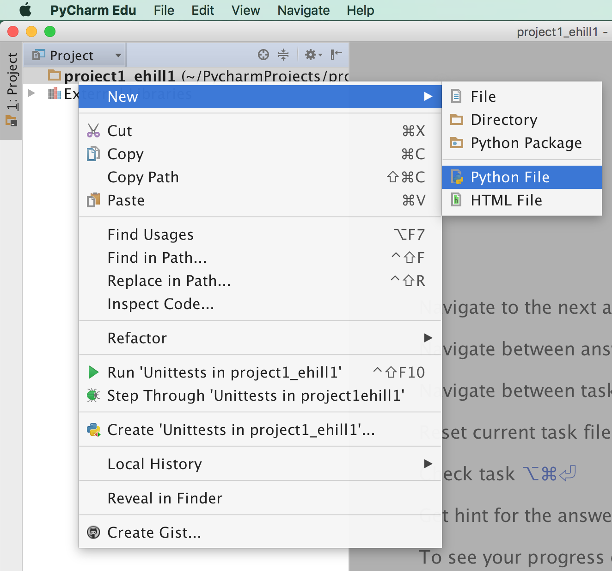
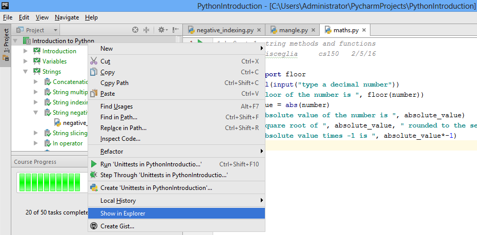

Project 1: Using Strings & Functions
Setup
- In PyCharm, create a new project with the name
project1_uLogin, where you replace “uLogin” with the beginning of your Drew e-mail address before the@symbol: - Create 5 python files:
bye.py,convert.py,fun.py,string.py, andmadlibs.py. To create a file, right-click on the project and selectNew > Python File:

{kind=link}
{kind=link}
{kind=link}
{kind=link}
Don’t forget to add a comment at the top of each program with your name and what the program does.
bye.py
- Edit the file
bye.py:- Create a variable that stores a name
- Print “Goodbye, …!” and replace the ellipsis (…) with the variable that is storing your last name.
- Add a comment at the top of the file that explains what your program does and who the authors are.
- Run your python program to make sure the output is correct
convert.py
Create a program convert.py, that takes a temperature in degrees Fahrenheit as input and outputs the equivalent temperature in degrees Celsius. Your program should have 2 variables:
degrees_f: holds a temperature in degrees fahrenheit (input from the user)degrees_c: holds the temperature in degrees celsius. To convert fahrenheit to celsius, deduct 32 from the fahrenheit temperature and multiply by 5/9.
Your program should print the values of both variables with a string description, such as: "F degrees fahrenheit = C degrees celsius", replacing F & C with the values of your variables.
For example:
| degrees_f | degrees_c | output |
|---|---|---|
| 86 | 30 | 86 degrees fahrenheit = 30 degrees celsius |
| 72 | 22 | 72 degrees fahrenheit = 22 degrees celsius |
| 32 | 0 | 32 degrees fahrenheit = 0 degrees celsius |
fun.py
Write a program fun.py that takes a float as input from the user and prints out the following information using the math module:
- The ceiling of the number (e.g.,
ceiling(3.75)is 4) - The number rounded to 0 decimal places
- The rounded number’s absolute value
- The factorial of the rounded number’s absolute value
Think about how you can apply the concept of DRY coding (Don’t Repeat Yourself) to make your solution more concise.
string.py
Write a program string.py that takes a string as input from the user and:
- Prints the string after performing the following two mangle operations:
- Swaps upper and lower case letters
- Removes the second and second to last characters
- Prints only the middle 3 letters of the string using the substring or splice operation (
[:])
For example:
| string | Mangled Output | Middle 3 |
|---|---|---|
| Monty Python!! | mNTY pYTHN!! | ‘Pyt’ |
| hello | HLO | ell |
| oh | OH | oh |
madlibs.py
Create a program madlibs.py that takes at least 6 parts of speech from the user as input, and outputs a story using those words. Your program should include at least one of each of the following parts of speech:
- Noun
- Adjective
- Verb
- Verb past tense
- Proper Name or Place or Animal
Each submission should be unique. You should not depend on any external files or modules (i.e., no imports); your program should be self-contained. If you choose to make use of any online resources, please include the URL in your comments and a brief description of how you used the resource to guide your implementation.
Submission
Once you’re satisfied that your programs are working correctly, zip it for submission:
- Locate your project on your computer’s hard drive. PyCharm can help:
- on windows:
 - on mac:

- on windows:
- Right-click on your project folder & create a zip file
- Make sure to name your zip file
project1_uLogin1.zip
{kind=link}
{kind=link}
{kind=link}
Upload your zip file to Canvas.
Hints
- Gave your project or file the wrong name? Right-click on it & go to
Refactor > Rename